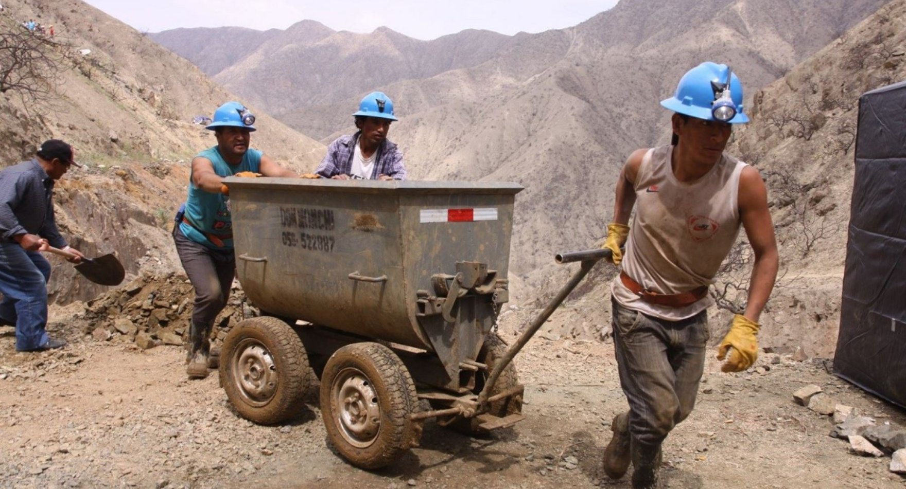

Con más de 4,600 millones de dólares anuales en movimiento, el dinero de la minería ilegal tiene capacidad para financiar miles de campañas electorales en el país. El riesgo no es solo de corrupción, sino la captura del poder.
Quizás después de las elecciones generales y regionales y municipales de 2026 muchos alcaldes y gobernadores, congresistas o el presidente ya no representarán al Estado, sino a los intereses de economías ilegales.
Según el estudio Tendencias y alertas 4 – Estimaciones de economías ilegales en el Perú, hay un alto riesgo de que esas mafias financien 2,368 campañas presidenciales, 57,728 campañas congresales y más de 51,000 campañas regionales, según cálculos del estudio.
Y los mineros ilegales serían los más interesados en hacerlo. Tienen dinero de sobra para hacerlo. Ganan más de 4,600 millones de dólares al año, lo que los ha convertido en la economía ilícita más lucrativa que el narcotráfico y el contrabando.
De acuerdo con el estudio, en 2026, los mineros podrían fortalecer la elección de congresistas que defiendan sus intereses, así como contar con personas funcionales a ellos en los gobiernos regionales y los municipios con representantes.
En la actualidad hay autoridades que defienden sus intereses. Según César Ipenza, abogado especialista en derecho ambiental, los mineros ilegales cuentan con una bancada multipartidaria ene l Congreso. En efecto, así parece ser. Las bancadas que impulsaron o apoyaron leyes a favor de estos mineros fueron Fuerza Popular, Avanza País, Perú Libre, Acción Popular, Alianza Para el Progreso, Somos Perú, Renovación Popular y Podemos Perú.
Estrategia de infiltración
Los especialistas refieren que el riesgo en la próxima campaña es que se infiltren en todo el proceso electoral: desde la afiliación a los partidos, selección de candidatos, influencia en las agendas locales y el debate público, hasta la llegada al poder. Moverán el dinero sucio en las campañas, posiblemente, usando fundaciones y donaciones, empresas fantasma y testaferros, pago a consultoras y asesores, manipular encuestas y pagar publicidad política en medios.
Lo que pasó con el Registro Integral de Formalización Minera (Reinfo) es un pequeño ejemplo de lo que podrían hacen los mineros con una bancada en el Congreso y presencia en los gobiernos subnacionales.
Es un patrón, según el informe, en el que las economías ilegales han aprendido a “producir” candidatos afines, infiltrar partidos o financiar líderes locales que pueden ser elegidas. Teniendo operadores dentro del sistema, se aseguren protección e impunidad.
Desde el Estado no se hace mucho para controlar la infiltración del dinero sucio en la campaña. No se fortalece la inteligencia financiera, ni se audita el origen de los aportes de campaña, tampoco se exige estándares éticos públicos y verificables a partidos y candidatos.